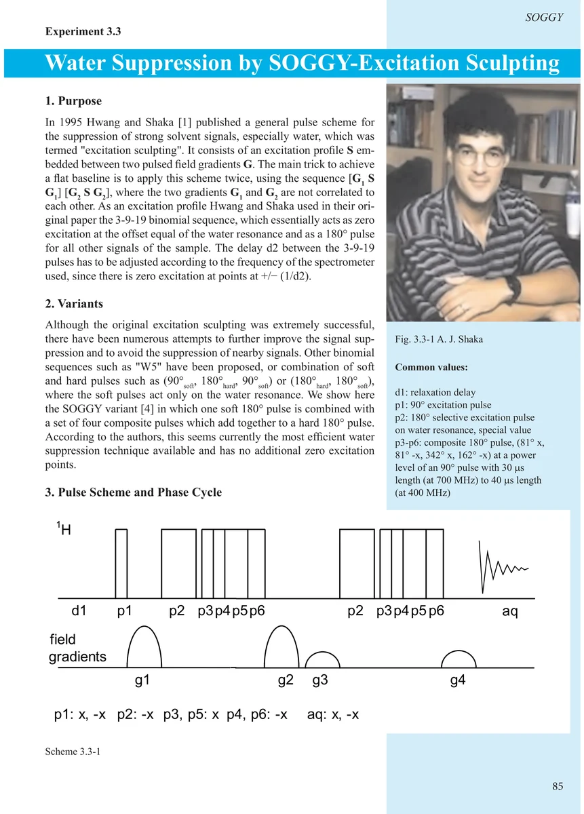
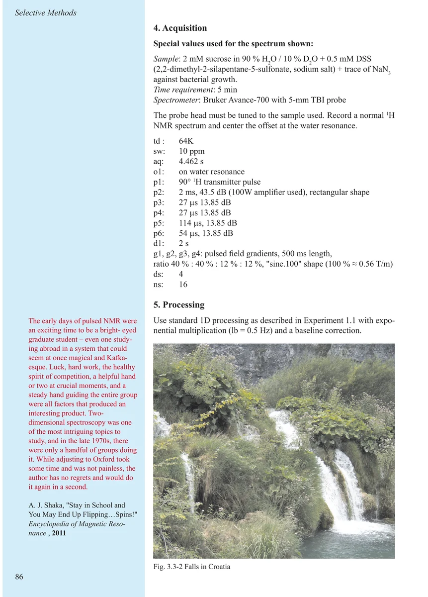
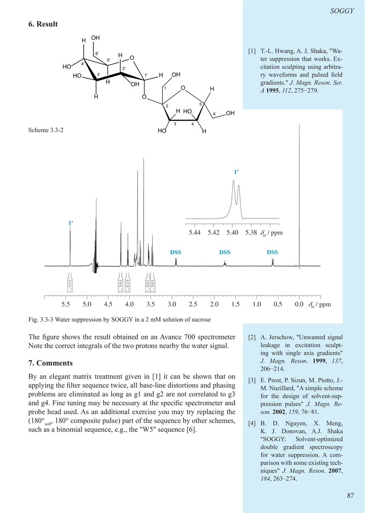
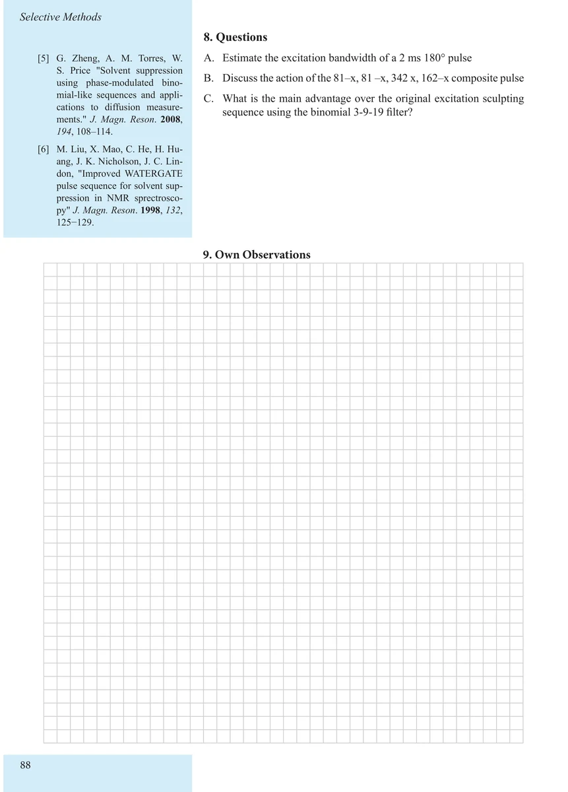

Item 3.3
Water Suppression by SOGGY Excitation Sculpting
SOGGY 激发雕刻水峰抑制
PDF 95–98 · 原书 85–88 · Selective Methods




核磁共振实验方法、脉冲序列与谱图实践
Item 3.3
SOGGY 激发雕刻水峰抑制
PDF 95–98 · 原书 85–88 · Selective Methods



